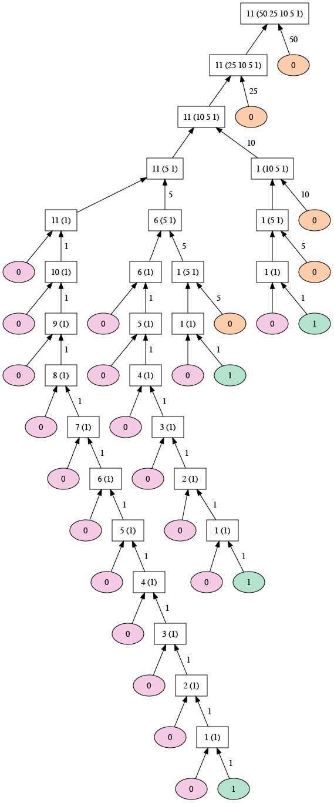
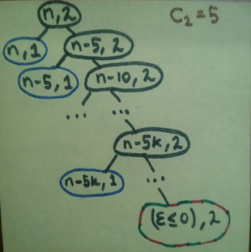
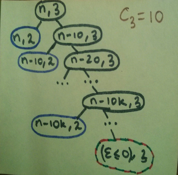

Permalink copied!
The previous examples illustrate that processes can differ
considerably in the rates at which they consume computational
resources. One convenient way to describe this difference is to use
the notion of
order of growth to obtain a gross measure of the
resources required by a process as the inputs become larger.
Let $n$ be a parameter that measures the size of
the problem, and let $R(n)$ be the amount
of resources the process requires for a problem of size
$n$. In our previous examples we took
$n$ to be the number for which a given
function is to be computed, but there are other possibilities.
For instance, if our goal is to compute an approximation to the
square root of a number, we might take
$n$ to be the number of digits accuracy required.
For matrix multiplication we might take $n$ to
be the number of rows in the matrices. In general there are a number of
properties of the problem with respect to which it will be desirable to
analyze a given process. Similarly, $R(n)$
might measure the number of internal storage registers used, the
number of elementary machine operations performed, and so on. In
computers that do only a fixed number of operations at a time, the
time required will be proportional to the number of elementary machine
operations performed.
We say that $R(n)$ has order of growth
$\Theta(f(n))$, written
$R(n)=\Theta(f(n))$ (pronounced
\[
\begin{array}{lllll}
k_1\,f(n) & \leq & R(n) & \leq & k_2\,f(n)
\end{array}
\]
theta of $f(n)$), if there are positive constants $k_1$ and $k_2$ independent of $n$ such that
for any sufficiently large value of $n$.
(In other words, for large $n$,
the value $R(n)$ is sandwiched between
$k_1f(n)$ and
$k_2f(n)$.)
For instance, with the linear recursive process for computing factorial
described in section 1.2.1 the
number of steps grows proportionally to the input
$n$. Thus, the steps required for this process
grows as $\Theta(n)$. We also saw that the space
required grows as $\Theta(n)$. For the
iterative factorial, the number of steps is still
$\Theta(n)$ but the space is
$\Theta(1)$—that is,
constant.
[1]
Orders of growth provide only a crude description of the behavior of a
process. For example, a process requiring $n^2$
steps and a process requiring $1000n^2$ steps and
a process requiring $3n^2+10n+17$ steps all have
$\Theta(n^2)$ order of growth. On the other hand,
order of growth provides a useful indication of how we may expect the
behavior of the process to change as we change the size of the problem.
For a
$\Theta(n)$ (linear) process, doubling the size
will roughly double the amount of resources used. For an
exponential process, each increment in problem size will multiply the
resource utilization by a constant factor. In the remainder of
section 1.2
we will examine two algorithms whose order of growth is
logarithmic, so that doubling the problem size increases the resource
requirement by a constant amount.
Draw the tree illustrating the process generated by the
count_change function
of section 1.2.2 in making change for
11 cents. What are the orders of growth of the space and number of steps
used by this process as the amount to be changed increases?
The tree-recursive process generated in computing
cc(11, 5) is illustrated by the
image below, due to Toby Thain, assuming that the coin values in
first_denomination are
$\mathbb{C}_{1} = 1$,
$\mathbb{C}_{2} = 5$,
$\mathbb{C}_{3} = 10$,
$\mathbb{C}_{4} = 25$ and
$\mathbb{C}_{5} = 50$.

Let us consider the process for evaluating
cc(n, k), which means the amount to
be changed is n and the number of
kinds of coins is k. Let us assume
the coin values are constants, not dependent on
n or
k.
The space required for a tree-recursive process is—as discussed in
section 1.2.2—proportional to the
maximum depth of the tree. At each step from a parent to a child in the
tree, either n strictly decreases
(by a constant coin value) or k
decreases (by 1), and leaf nodes have an amount of at most 0 or a number
of kinds of coins of 0. Thus, every path has a length of
$\Theta(n + k)$, which is also the order of
growth of the space required for
cc(n, k).
Let us derive a function $T(n, k)$ such that
the time required for calculating
cc(n, k) has an order of growth of
$\Theta(T(n, k))$. The following argument is
due to Yati Sagade, including the illustrations
(Sagade 2015 ).
Let us start with the call tree for changing some amount
$n$ with just 1 kind of coin, i.e.,
the call tree for cc(n, 1).

We are only allowed here to use one kind of coin, with value
$\mathbb{C}_{1} = 1$. The red nodes are
terminal nodes that yield 0, the green node is a terminal node that
yields 1 (corresponding to the first condition in the declaration of
cc). Each nonterminal node spawns
two calls to cc, one (on the left)
with the same amount, but fewer kinds of coins, and the other (on the
right) with the amount reduced by 1 and equal kinds of coins.
Excluding the root, each level has exactly 2 nodes, and there are
$n$ such levels. This means, the number of
cc calls generated by a single
cc(n, 1) call (including the original
call) is:
\[
T(n,1) = 2n + 1 = \Theta(n)
\]
Next, we will look at the call tree of
cc(n, 2)
to calculate $T(n,2)$:

Here, we are allowed to use two denominations of coins:
$\mathbb{C}_{2} = 5$
and $\mathbb{C}_{1} = 1$.
Each black node spawns a cc(m, 1)
subtree (blue), which we’ve already analyzed, and a
cc(m - 5, 2) subtree. The node
colored in red and green is a terminal node, but yields 0 if the amount
is less than zero and 1 if the amount is exactly zero. Sagade denotes
this final amount as $\epsilon$, which can
be $\le0$.
Excluding the root and and the last level in this tree which contains the
red-green terminal node, there will be exactly
$\big\lfloor {\frac {n} {5}} \big\rfloor$
levels. Now each of these levels contains a call to
cc(m, 1) (the blue nodes), each of
which, in turn, is $\Theta(n)$ in time. So each
of these levels contains $T(n,1) + 1$ calls to
cc. Therefore, the total number of
nodes (including the terminal node and the root) in the call tree for
cc(n, 2) is:
\[
T(n,2) = \big\lfloor {\frac {n} {5} } \big\rfloor ( T(n,1) + 1) + 2 = \big\lfloor {\frac {n} {5} } \big\rfloor ( 2n + 2 ) + 2 = \Theta(n^2)
\]
Moving ahead, let’s take a look at the call tree of
cc(n, 3), i.e., we are now allowed
to use three denominations of coins, the new addition being
$\mathbb{C}_{3} = 10$:

Here also, we see, similar to the previous case, that the total number of
calls to cc will be
\[
T(n,3) = \big\lfloor {\frac {n} {10} } \big\rfloor ( T(n,2) + 1) + 2 = \big\lfloor {\frac {n} {10} } \big\rfloor \times \Theta(n^2) + 2 = \Theta(n^3)
\]
We can see a pattern here. For some $k$,
$k \gt 1$, we have,
\[
T(n,k) = \big\lfloor {\frac {n} { \mathbb{C}_{k} } } \big\rfloor ( T(n, k-1) + 1) + 2
\]
Here, $\mathbb{C}_{k}$ is the
$k^{th}$ coin denomination. We can expand this
further:
\[
T(n,k)
= \big\lfloor {\frac {n} { \mathbb{C}_{k} } } \big\rfloor ( T(n, k-1) + 1 ) + 2
= \big\lfloor {\frac {n} { \mathbb{C}_{k} } } \big\rfloor
( \big\lfloor {\frac {n} { \mathbb{C}_{k-1} } } \big\rfloor
(... \big\lfloor \frac {n} { \mathbb{C}_{2} } \big\rfloor (2n+1) ...)
) + 2
= \Theta(n^k)
\]
Note that the actual values of the coin denominations have no effect on
the order of growth of this process, if we assume they are constants that
do not depend on n and
k.
The sine of an angle (specified in radians) can be computed by making use
of the approximation $\sin x\approx x$
if $x$ is sufficiently small, and the
trigonometric identity
\[
\begin{array}{lll}
\sin x &=& 3\sin {\dfrac{x}{3}}-4\sin^3{\dfrac{x}{3}}
\end{array}
\]
to reduce the size of the argument of $\sin$.
(For purposes of this exercise an angle is considered
sufficiently smallif its magnitude is not greater than 0.1 radians.) These ideas are incorporated in the following functions:
function cube(x) {
return x * x * x;
}
function p(x) {
return 3 * x - 4 * cube(x);
}
function sine(angle) {
return ! (abs(angle) > 0.1)
? angle
: p(sine(angle / 3));
}
- How many times is the function p applied when sine(12.15) is evaluated?
- What is the order of growth in space and number of steps (as a function of $a$) used by the process generated by the sine function when sine(a) is evaluated?
- The function p will call itself recursively as long as the angle value is greater than 0.1. There will be altogether 5 calls of p, with arguments 12.15, 4.05, 1.35, 0.45, 0.15 and 0.05.
- The function sine gives rise to a recursive process. In each recursive call, the angle is divided by 3 until its absolute value is smaller than 0.1. Thus the number of steps and the space required has an order of growth of $O(\log a)$. Note that the base of the logarithm is immaterial for the order of growth because the logarithms of different bases differ only by a constant factor.
[1]
These statements mask a great deal of oversimplification.
For instance, if we count process steps as
machine operationswe are making the assumption that the number of machine operations needed to perform, say, a multiplication is independent of the size of the numbers to be multiplied, which is false if the numbers are sufficiently large. Similar remarks hold for the estimates of space. Like the design and description of a process, the analysis of a process can be carried out at various levels of abstraction.
1.2.3
Orders of Growth